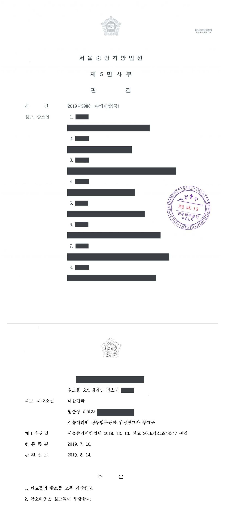
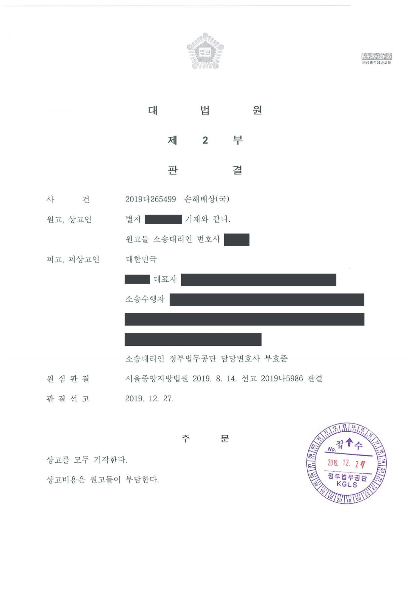

수사기관 통신자료 제공 관련 국가배상 청구소송 (1·2·3심)
서울중앙지방법원 2016가소5944347 · 서울중앙지방법원 2019나5986 · 대법원 2019다265499 · 담당변호사 부효준
사건의 요지
이동통신 가입자들이 수사기관의 통신자료 제공 요청과 전기통신사업자의 제공으로 개인정보자기결정권이 침해되었다며 국가배상을 구한 사건으로, 통신자료 제공의 위법성과 국가의 배상책임 성립 여부가 다투어졌습니다.
사건의 주요 내용
원고들은 이동통신 가입자들(항소심 기준 19명)로, 전기통신사업자에게 통신자료 제공사실 확인을 신청한 결과 2014년부터 2016년 사이에 경찰·검찰·정보기관 등 수사기관이 전기통신사업법 제83조 제3항에 따라 자신들의 통신자료를 제공받은 사실을 확인하였습니다. 원고들은 국가가 통신자료 제공요청 권한을 남용하여 개인정보자기결정권을 침해하였다고 주장하며 1인당 60만 원의 위자료를 구하는 소를 제기하였습니다.
부효준 변호사는 피고 대한민국을 대리하였습니다. 제1심에서는 법원이 2016년 11월 문서제출명령을 하였다가 이를 취소하는 결정을 하는 등 증거에 관한 다툼이 있었고, 제1심은 2018년 12월 원고들의 청구를 받아들이지 않았습니다. 항소심은 2019년 8월 항소를 모두 받아들이지 않았고, 대법원은 2019년 12월 상고를 모두 받아들이지 않아 판결이 확정되었습니다.
쟁점
- 수사기관이 전기통신사업법 제83조 제3항에 따라 통신자료를 제공받은 것이 국가배상책임을 발생시키는 위법한 직무집행이 되기 위한 요건이 무엇인지
- 통신자료 제공사실 확인 내역만으로 수사기관의 권한 남용과 부당한 이익 침해가 증명되었다고 볼 수 있는지
- 소액사건에서 사실인정이나 증거 평가를 다투는 상고가 적법한 상고이유가 될 수 있는지
원고의 주장
- 수사기관이 전기통신사업법 제83조 제3항에 따른 통신자료 제공요청 권한을 남용하여 원고들의 통신자료(가입자 정보)를 제공받았고, 이로써 원고들의 개인정보자기결정권이 침해되었다고 주장하였습니다.
- 국가는 그 위법한 직무집행으로 인한 정신적 손해에 대하여 원고 1인당 60만 원의 위자료를 지급할 의무가 있다고 주장하였습니다.
부효준 변호사의 주장
- 전기통신사업법 제83조 제3항은 수사기관이 재판·수사 등을 위하여 전기통신사업자에게 통신자료의 열람·제출을 요청할 수 있도록 정하고 있으므로, 법률에 근거한 통신자료 제공요청 자체를 위법하다고 할 수 없다고 주장하였습니다.
- 국가에 배상책임을 지우려면 개별 제공요청이 실질적으로 권한을 남용하여 원고들의 이익을 부당하게 침해한 것이어야 하는데, 원고들이 제출한 통신자료 제공사실 확인 내역만으로는 그러한 사정이 증명되지 않는다고 다투었습니다.
법원의 판단
항소심은 피고에게 손해배상책임을 지우기 위해서는 피고가 전기통신사업법 제83조 제3항에 따라 통신자료를 제공받은 것이 실질적으로 그 권한을 남용하여 원고들의 이익을 부당하게 침해한 것이라고 인정할 수 있어야 한다는 기준을 제시하였습니다. 그리고 원고들이 제출한 증거들만으로는 그러한 권한남용과 그로 인한 부당한 이익침해를 인정하기에 부족하다고 보아, 청구를 받아들이지 않은 제1심판결이 정당하다고 하면서 원고들의 항소를 모두 받아들이지 않았습니다.
대법원은 이 사건이 소액사건심판법 제2조 제1항과 소액사건심판규칙 제1조의2가 정한 소액사건인데, 원고들이 상고이유로 주장하는 바가 소액사건심판법 제3조 각 호의 어느 경우에도 해당하지 않아 적법한 상고이유가 될 수 없다는 이유로 상고를 모두 받아들이지 않았습니다. 이로써 원고들의 청구를 받아들이지 않은 판결이 확정되었습니다.
피고에게 손해배상책임을 지우기 위해서는 피고가 전기통신사업법 제83조 제3항에 따라 별지 표1 내역과 같이 통신자료를 제공받은 것이 실질적으로는 그 권한을 남용하여 원고들의 이익을 부당하게 침해한 것이라 인정할 수 있어야 한다. 그러나 원고들이 제출한 증거들만으로는 위와 같은 권한남용과 그로 인한 부당한 이익침해를 인정하기 부족하다.
서울중앙지방법원 2019나5986 판결 이유 '3. 판단'
기록에 의하면 이 사건은 소액사건심판법 제2조 제1항, 소액사건심판규칙 제1조의2에 정한 소액사건인데, 원고들이 상고이유로 주장하는 바는 소액사건심판법 제3조 각 호에 정한 어느 경우에도 해당하지 아니하므로 적법한 상고이유가 될 수 없다.
그러므로 상고를 모두 기각하고 상고비용은 패소자들이 부담하도록 하여, 관여 대법관의 일치된 의견으로 주문과 같이 판결한다.
대법원 2019다265499 판결 이유
※ 판결 이유 가운데 이 사건의 판단 기준이 된 부분을 그대로 옮긴 것으로, 당사자 이름 등은 가렸습니다.
이 사건이 보여 주는 것
수사기관의 통신자료 제공요청은 전기통신사업법 제83조 제3항에 근거한 것이어서, 통신자료가 제공된 사실 자체만으로 국가배상책임이 성립하지는 않습니다. 이 판결은 가입자가 국가를 상대로 배상을 구하려면 개별 요청이 실질적으로 권한을 남용하여 자신의 이익을 부당하게 침해하였다는 점을 증명하여야 한다는 기준을 보여 줍니다. 다만 헌법재판소는 2022년 7월 이 조항에 대하여 통신자료 제공 사실을 정보주체에게 사후에 알리는 절차가 없다는 점을 이유로 헌법불합치 결정을 하였으므로(2016헌마388 등), 그 뒤의 제도 변화도 함께 살펴볼 필요가 있습니다.
또한 소액사건에서는 상고이유가 소액사건심판법 제3조가 정한 사유(법률 등의 헌법 위반 여부에 대한 판단이 부당한 때, 대법원 판례에 상반되는 판단을 한 때)로 제한되므로, 사실인정이나 증거 평가를 다투는 상고는 받아들여지지 않는다는 점도 유념할 필요가 있습니다.
판결문 3장



비슷한 처분을 받으셨다면
행정처분은 처분이 있음을 안 날부터 90일 이내에 행정심판이나 취소소송으로 다투어야 하고, 기간이 지나면 돌이킬 수 없는 처분은 집행정지를 서둘러야 합니다. 처분서를 받은 날짜부터 확인해 드립니다.